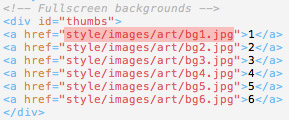
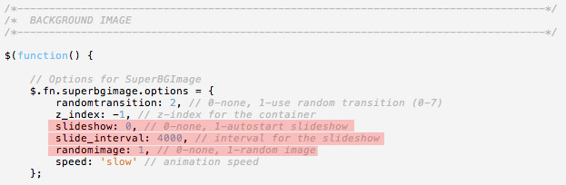
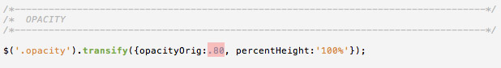
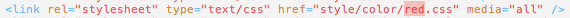
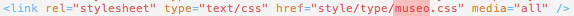
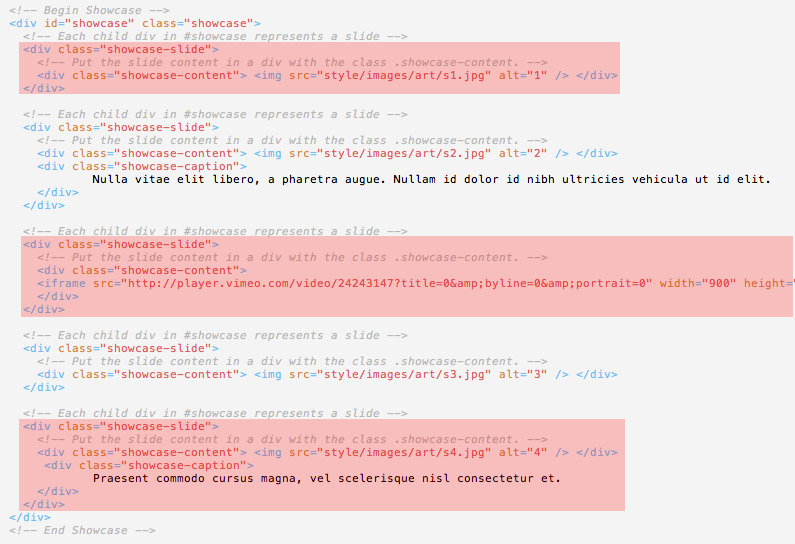
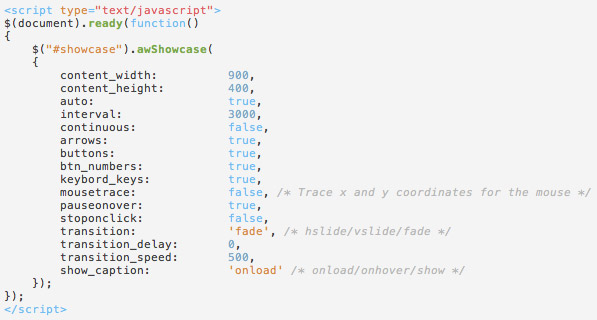
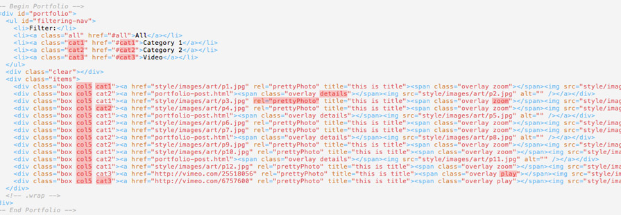

To add your fullscreen images edit the image paths of following lines in the html files:
You can add more images or remove them if you have less or more than 6 images.
To change the background image rotating settings open style/js/scripts.js. You can edit the highlighted lines:
You can change the background opacity through style/js/scripts.js line 62:
In the above example background color opacity is 80%. You can increase or decrease the value .80 as you need.
There are 5 color options available:
You will need to state which color you will use inside every html file. The default color of the theme files is "red" (as seen in the example below). If you want to change it to other available color options you will need to change the highlighted part with one of the available colors.
There are 13 font options available for headings:
You will need to state which font you want to use inside every html file. The default font is "museo" (as seen in the example below). If you want to change with another available font option you will need to change the highlighted part with the new font name.
Below you can see a menu example:
<div id="menu" class="menu opacity"> <ul> <li><a href="#" class="active">1. Item</a></li> <li><a href="#">2. Item</a> <ul> <li><a href="#">2.1 Item</a></li> <li><a href="#">2.2 Item</a> <ul> <li><a href="#">2.2.1 Item</a></li> <li><a href="#">2.2.2 Item</a></li> <li><a href="#">2.2.3 Item</a> <ul> <li><a href="#">2.2.3.1 Item</a></li> <li><a href="#">2.2.3.2 Item</a></li> </ul> </li> </ul> </li> </ul> </li> </ul> </div> </div>
In the theme package index3.html and index4.html include Awkward Slider. Image size must be 900x400px. Basic usage of the slider is as follows:
You can change the slider settings by editing the script in the html files:
Basic usage of the portfolio is as follows:
The important parts are highlighted above.
You can add any number of categories and change their names in the filtering-nav.
You can use details, zoom or play as overlay icons when hovered over the thumbnails.
If you would like to make the images open up with lightbox make sure you have rel="prettyPhoto" attribute in your a tags.
portfolio.html in the theme package is 5 columns. But you can change it as 4 or 3 columns by editing the col5 class in the div tags as col4 or col3.
If you are using 5 columns then the thumbnail image with must be 164px. Height can be any value.
If you are using 4 columns then the thumbnail image with must be 210px. Height can be any value.
If you are using 3 columns then the thumbnail image with must be 288px. Height can be any value.
To receive the messages sent through the contact form in contact.html or in the footer area, open up contact/form-handler.php and edit line 5:
$emailto = 'name@domain.com';
For SMTP support edit line 4. Set to "1" if you want to use SMTP to send the email. Default is "0", which uses the standard PHP mail function.
$use_smtp = '1';
If using SMTP you will also need to fill in the 4 SMTP variables - lines 64 - 67.
$SmtpServer = 'SMTP SERVER'; $SmtpPort = 'SMTP PORT'; $SmtpUser = 'SMTP USER'; $SmtpPass = 'SMTP PASSWORD';